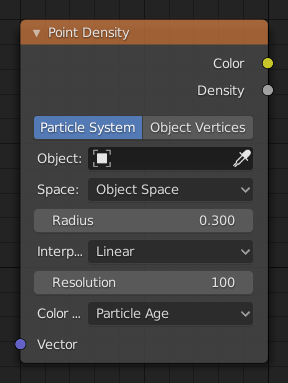

点密度着色器节点¶

点密度着色器节点。¶
点密度 节点用于为每个粒子或物体的顶点添加体积点。
输入选项¶
- 矢量
纹理坐标到样本纹理；如果接口未连接，则默认生成纹理坐标。
属性¶
- 点数据
如何获取点数据。
- 粒子系统
使用指定粒子系统中的每个粒子位置。
- 物体顶点
使用指定物体中的每个顶点的位置。
- 物体
使用指定对象中的每个顶点位置。
- 粒子系统
使用该系统的粒子位置。
- 间隔
映射点的坐标。
- 世界空间
将每个点精确映射到源粒子或顶点的位置。
- 物体空间
使用点密度纹理拟合对象边界框内的源粒子或顶点。
- 半径
点的尺寸。
- 插值类型
特塞尔过滤类型。
- 最近
无插值，使用最近的值。产生块状的观察点。
- 线性
特塞尔间进行线性插值，产生柔软的圆点。
- 三次型
使用立方衰减，产生非常软的点。当点非常密集时很有用。
- 分辨率
保持点数据的纹理尺寸。
- 色彩源
用于输出着色的粒子系统或网格的属性。
- 粒子源
- 粒子年龄
粒子的寿命，取值范围：(0.0 - 1.0)。
- 粒子速度
粒子的绝对速度大小，取值范围：(0.0 - 1.0)。
- 粒子速率
XYZ速度映射到RGB颜色。
- 顶点色彩源
- 顶点颜色
使用顶点颜色层为点密度纹理着色。
Note
每个面角定义顶点颜色。单个顶点可以具有与其所属的面一样多的不同颜色。点密度纹理的实际颜色从所有顶点角取平均值。
- 顶点权重
使用顶点组的权重作为强度值。
- 顶点法线
将对象空间顶点法线用作RGB值。
输出选项¶
- 颜色
输出颜色纹理。
- 密度
体积密度。